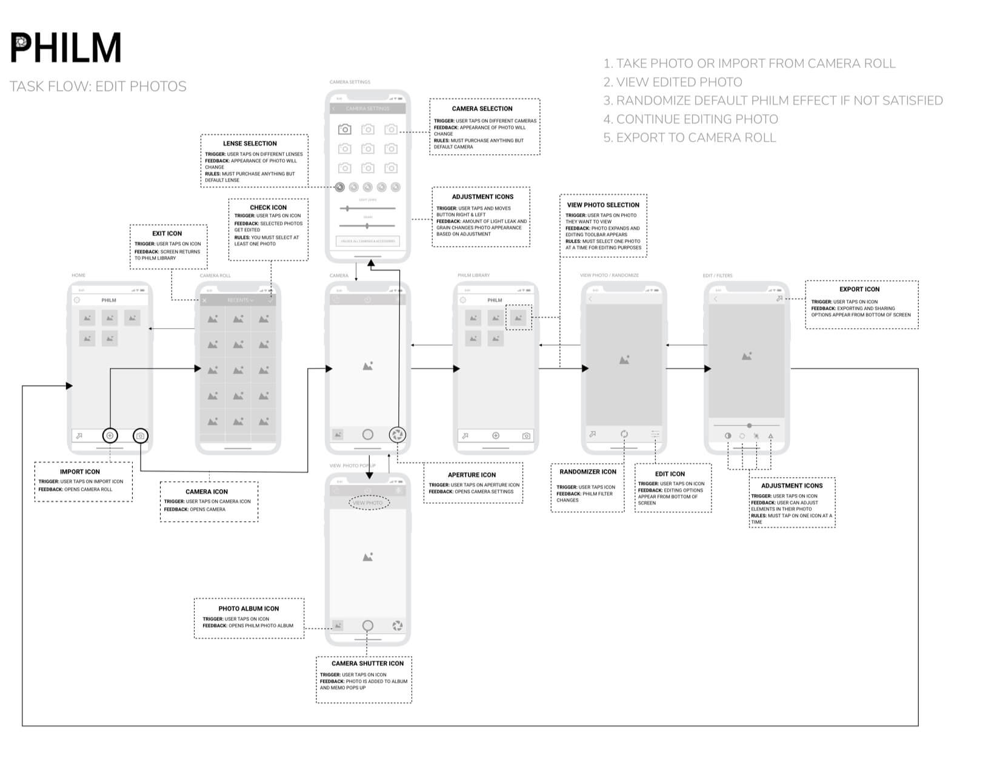
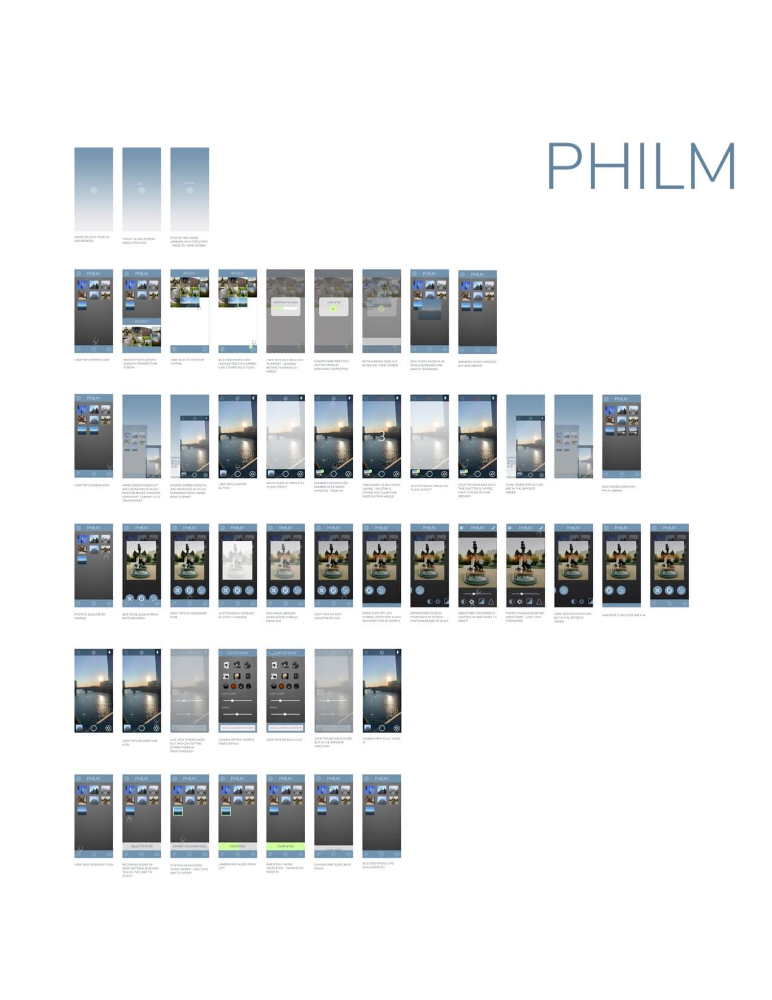

I redesigned an already existing app and went through the designing and prototyping process to eventually render interactions through AfterEffects of the application's core functions.

I started out with sketching out ideations of possible interactions I wanted to be used within the app I was redesigning.
Completed a task flow after similarly making one for the preexisting app. Incorporated triggers, feedback, and rules for all of the interactions that I wanted included in the app.

Created a color palette and selected the typography I wanted in my app based on my knowledge of design and of the consumers I wanted to reach through this app.

Started creating a visual of what I wanted my interface to look like based on the color palette and incorporated in my interactions step-by-step.

Created a task flow of the main interactions I wanted within the app. Incorporated triggers, feedback, and rules of all the possible interactions I used.
Made a master sketch file of all of the screens within the app and what each interaction would look like. These include importing, taking, editing, and exporting photos.